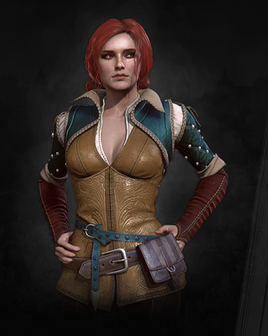

PL

Geralt of Rivia is the main character of the Witcher series of games.
He is a Witcher, or professional monster hunter, who is extremely talented and experienced.
His body has been modified by magical mutation, which allows him to fight monsters on equal footing.
Geralt is a man of tough character, but at the same time has deep emotions and loyalty to his friends.
His steadfast conviction and duty to fulfill orders mean that he is often forced to make morally difficult decisions.
Although he is often alone, Geralt has strong bonds with other characters, especially Yennefer and Triss.
In The Witcher games, players guide Geralt and make decisions that will affect his fate and the fate of the game world.

Cirilla Fiona Elen Riannon, often referred to as Ciri,
is one of the main characters in the Witcher game world. She is a Witcher in potency and an heiress of Witcher blood,
making her one of the most unusual and powerful creatures in the game world. Ciri is known for being extremely determined and brave, as well as for her extraordinary combat and magical abilities.
In The Witcher games, Ciri is often considered a key character in the plot, and her fate and adventures are an important part of the gameplay.
In The Witcher games, Ciri is often considered Geralt's protégé and one of the main plot links.

Yennefer of Vengerberg is one of the main characters in the world of The Witcher game.
She is a sorceress of high descent and influence, and a member of the royal academy of wizards. Yennefer is a strong and intelligent character,
who is not afraid to take risks and pursues her goals at all costs. She is also known for her beautiful appearance and sexual magnetism,
which is often an important part of her image and identity. In the games The Witcher,
Yennefer is often a close ally and beloved of Geralt of Rivia, and her role and contribution to the game's plot changes from game to game.

Dandelion, often referred to simply as Jasper, is one of the main NPCs in the Witcher game world.
He is a bard and companion of Geralt of Rivia, who often tells stories about his adventures and achievements. Buttercup is a character full of life and optimism,
who is always ready to smile and sing a song, even in the most difficult situations. He is also known for being volatile and not very responsible,
which sometimes leads to conflicts with Geralt and other characters. In the games The Witcher,
Buttercup often acts as a narrator and source of humor, and adds an extra dimension and depth to the game's plot.

Triss Merigold is one of the main characters in the Witcher game world.
She is a sorceress and a member of the royal academy of wizards. Triss is a kind and caring character who is always ready to help her friends.
She is also considered one of the most beautiful women in the game world, which is often an important part of her image and identity.
In the Witcher games, Triss is often a close ally of Geralt of Rivia and the other Witchers, and her role and contribution to the game's plot changes from game to game.